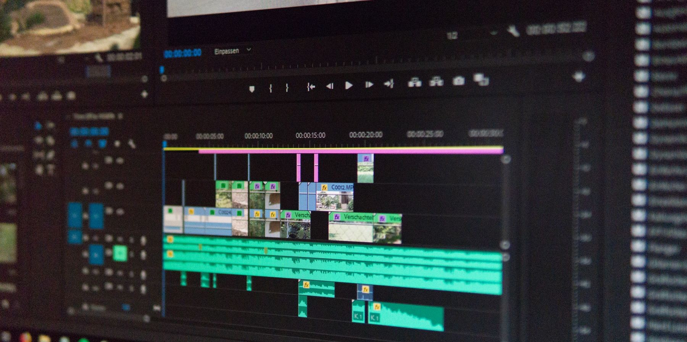

Featured
Craft / 06.08.2026
What the Light Is Really Doing.
Before a single frame is composed, the light has already decided what the scene means.
Journal / 2025—2026
Ten short entries on craft, process and the decisions no one sees on screen.
Craft / 06.08.2026
Before a single frame is composed, the light has already decided what the scene means.

Field notes / 24.07.2026

Production / 12.06.2026

Post-production / 30.05.2026
Behind the scenes / 18.05.2026

Craft / 02.05.2026
Grain is not a flaw to fix. Sometimes it is the entire point.
Documentary / 21.04.2026

Post-production / 09.04.2026

Wedding films / 28.03.2026

Pre-production / 15.03.2026
Everything written here gets made somewhere else — see the films these notes come from.
VIEW THE WORK
Commercial, brand film, corporate story or something still taking shape—start with the brief.
HELLO@ENVIZONFILMS.COM